Stat50 2.5 Linear Functions of RVs.pdf
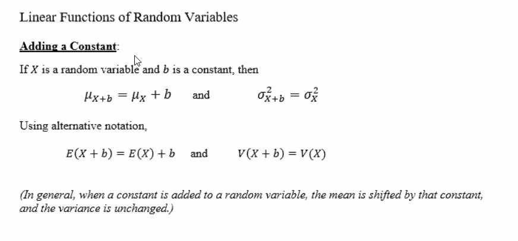
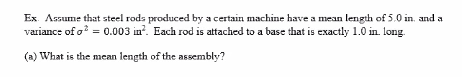
Each rod is attached to a base that is 1.0 in long. So the mean length of the assembly will be:
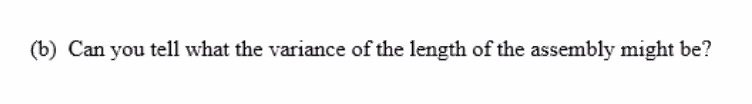
Since each length is increased by the same amount, the spread in the lengths doesn't change. So the variance remains the same:
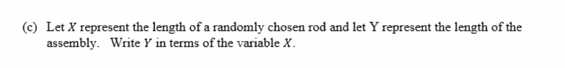
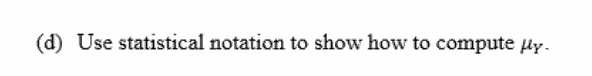
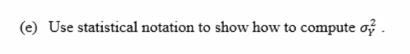
Note: the standard deviation of
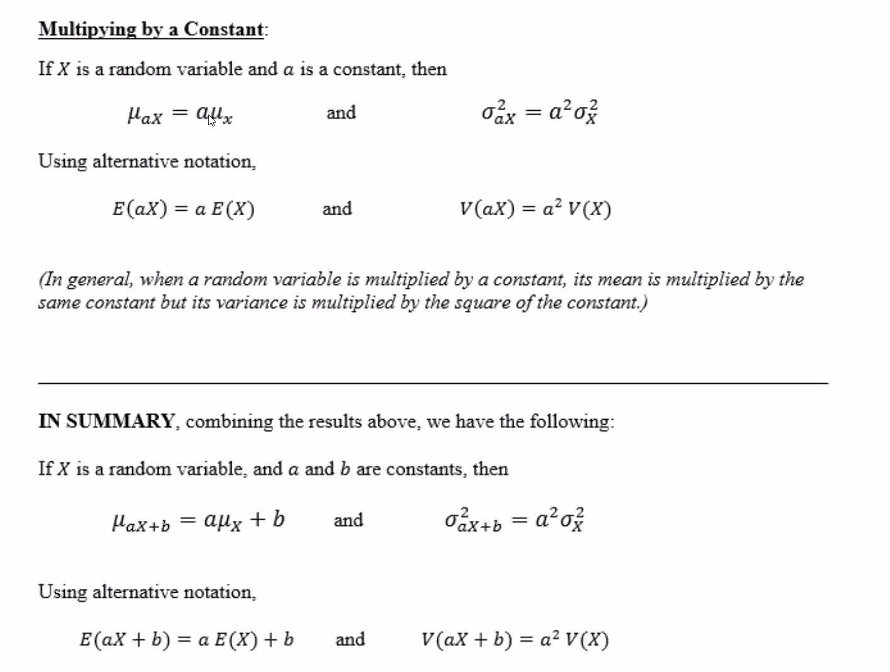
continuing the last e.g.:
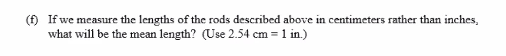
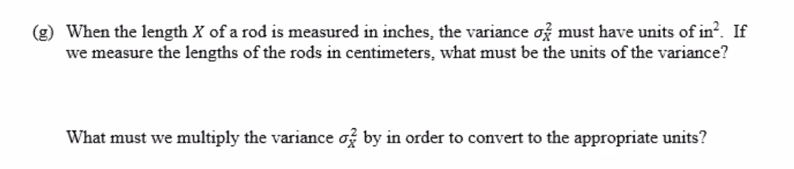
HERE
To convert our variance to square cm we need to multiply:
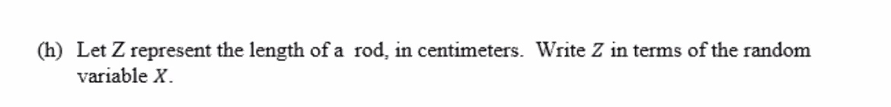
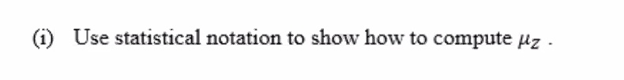
The mean of the rod length in cm:
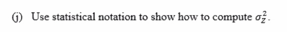
Note: the standard deviation of this is:
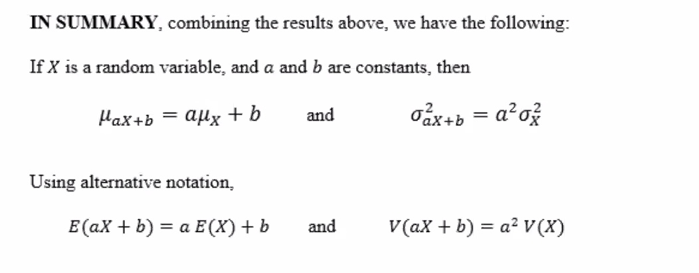
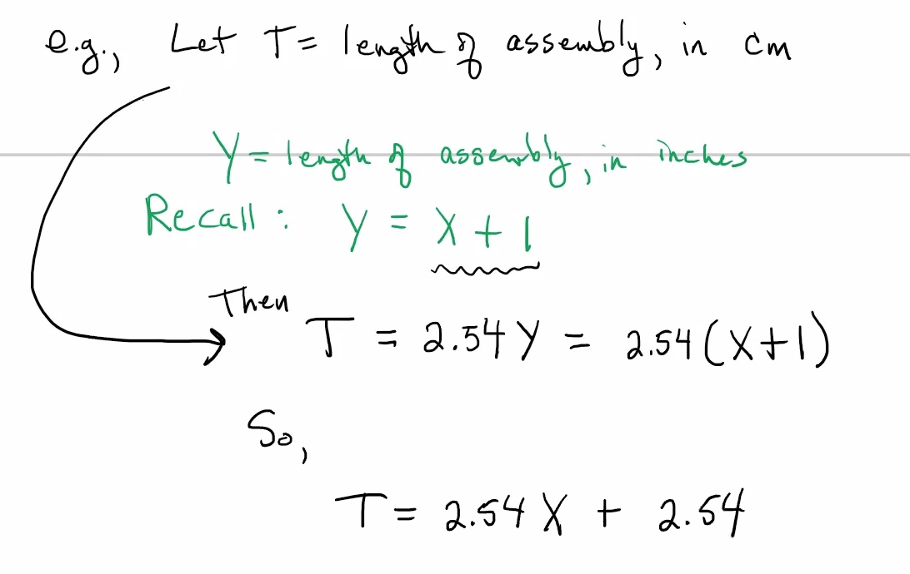
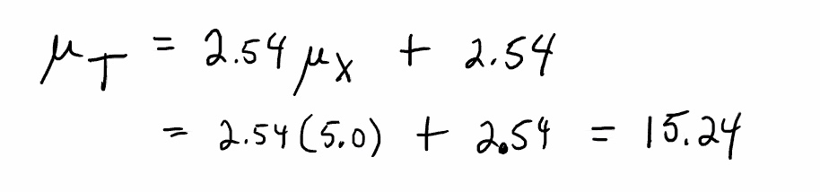
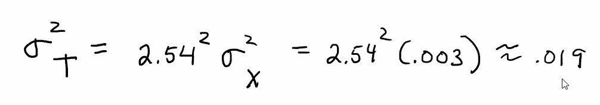